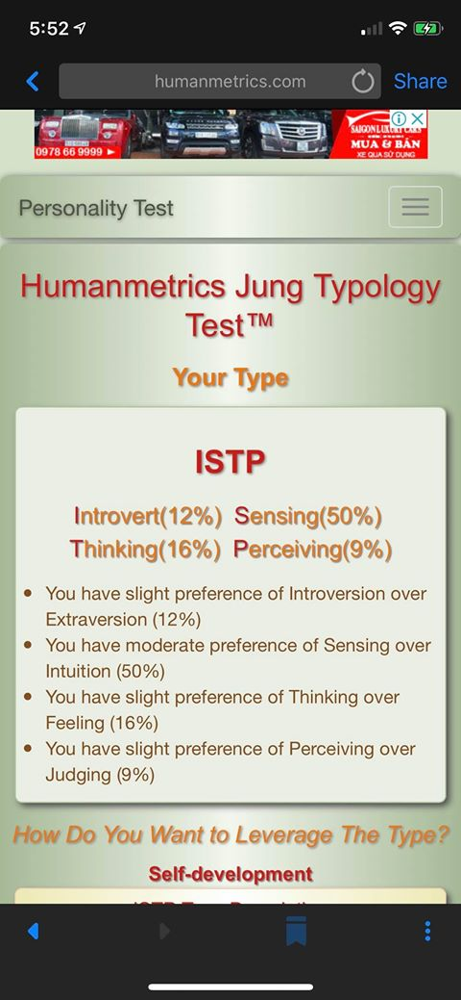

My interest in It is AI. I had always been fascinated with the concept of AI, Artificial Intelligence. I want to know how they work, how they are programed, what are the core principals that they are built on and that may be the largest reason for my interest in IT.
My results from an online Myers-Briggs test.

With the results of the tests above, I think it fits me perfectly as I can solve problems very well due to how I always think of a soluton clearly first then see if it can be implemented. I always gather facts first to solve a problem rather than using intuition that could lead me to the wrong solution.
My ideal job is to be a Data Analysist. Due to how it directly corresponds to my interest in AI, in which I have to analyze the bulk data that is utilized and produced by AI.